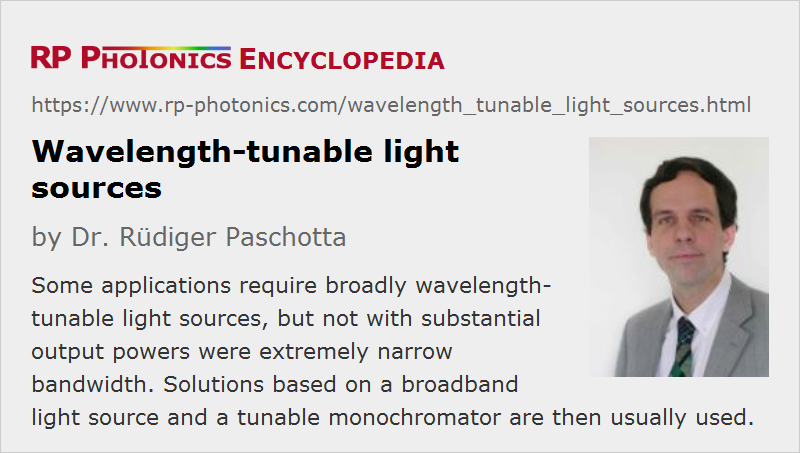

Wavelength-tunable Light Sources
Definition: light sources where the optical wavelength can be tuned
More specific terms: tunable lasers, supercontinuum sources, optical parametric oscillators
German: wellenlängen-abstimmbare Lichtquellen
How to cite the article; suggest additional literature
Author: Dr. Rüdiger Paschotta
There are various kinds of light sources where the optical wavelength can be tuned (adjusted), often through a wide range – in some cases from the ultraviolet through the full visible spectral region some way into the infrared. The obtained optical bandwidth is usually not particularly small – e.g. of the order of 1 nm – but small enough to consider the light as quasi-monochromatic for various applications. The output light may be delivered as a free-space light beam or through a fiber cable.
Performance Figures
The key performance figures of wavelength-tunable light sources are the following:
- There is a limited wavelength range through which one can address.
- The optical bandwidth must be small enough for the envisaged application.
- The output power (or alternatively the spectral flux) is quite relevant for some applications, much less for others. Often, a smaller bandwidth implies lower output powers – except for laser sources and OPOs (see below).
- It can also be of interest how quickly the optical wavelength can be scanned through the full range. In some cases, one requires high agility for randomly selecting different wavelength values. While some devices require many second to change from one wavelength to another, others can do that within a small fraction of a second.
Additional aspects of practical relevance can be the power consumption, the dissipation of waste heat from a lamp, the lamp lifetime, the stability of the output power, the variability of output power versus wavelength and the form in which the output light is provided (e.g. beam quality of a free-space output or details of the fiber cable).
Solutions with Broadband Light Source and Bandpass Filter
Such sources are often realized with the combination of a broadband light source (white light source, if it is in the visible region) and a tunable monochromator, which at any time transmits only a small portion of the optical spectrum of the light source. In the simplest case, the monochromator is tuned manually, but in many cases one has a computer-controlled motor drive, which allows one either to automatically tune to certain wavelengths (entered manually or program through a computer), or to continuously scan through certain wavelength regions.
With that technical approach, one can span very large wavelength regions, often more than the whole visible spectral region. For example, a halogen lamp (often based on a tungsten filament in a quartz bulb) can emit light from the mid infrared throughout the visible region and somewhat into the ultraviolet. DC arc lamps (e.g. with mercury, neon, argon or xenon) are suitable for getting further into the ultraviolet. Note that UV-enhanced lamps also have a bulb glass with high UV transmission.
It is not particularly difficult to construct a monochromator which can be tuned through a large wavelength range, although there is a risk that one obtains unwanted wavelength components related to higher diffraction orders. The tuning speed, however, is normally quite limited. Much faster wavelength scanning is possible with an electronically controlled bandpass filter, for example with an acousto-optic tunable filter (AOTF).
Limited and Variable Output Power
A fundamental problem of this technical approach is that only a tiny part of the generated optical power can be used, because most of it is outside the currently selected narrow spectral region. This is particularly so if the required optical bandwidth is small. To optimize that trade-off for an application, the filter bandwidth can often be changed, for example by changing the width of an optical slit of the monochromator.
If some kind of incandescent lamp is used (e.g. a halogen lamp), which has a low spatial coherence, a further problem is that most of the light is emitted in directions where it is hardly usable. Not only the typical applications, but also the used monochromator require a more or less well defined light beam, and even when using well-designed reflectors it is hard to efficiently collect such light and forming a beam. However, lamps can be optimized to some extent by minimizing the light-emitting volume. This is particularly possible with arc lamps.
In some cases, one tries to increase the output power despite the low power efficiency simply by using a more powerful light source. For example, one may use a xenon or mercury vapor lamp with 1 kW electrical drive power. The intense heat then often makes it necessary to use additional cold mirrors or hot mirrors for protecting further optics against the intense infrared radiation.
The light collection problem can be eliminated by using a spatially coherent source, which can be based on supercontinuum generation. Such sources can be realized with photonic crystal fibers, can span many hundreds of nanometers and deliver near-perfect spatial coherence. However, they contain a laser source and are relatively expensive.
Unfortunately, the output power can vary substantially when tuning the wavelength. While halogen lamps have a quite smooth optical spectrum, discharge lamps tend to feature spectra with pronounced spikes, leading to substantial power changes within narrow wavelength regions. To a substantial extent, however, applications can be made immune to such variations, e.g. with techniques of balanced photodetection or by comparing the results of scans with and without an absorbing sample. There are also tunable light sources with stabilized output power (using optical feedback control), at least removing effects of long-term lamp aging.
The light emission may also vary over time, not only related to aging of the lamp, but also due to fluctuations e.g. in an electrical discharge or imperfections of the electric power source.
Tunable Lasers and OPOs
A completely different technical approach is to use a tunable laser. Here, one can obtain radiance (brightness) levels which are higher by orders of magnitude, because (a) the generated radiation typically has a high degree of spatial coherence (high beam quality) and (b) it is naturally confined to a narrow wavelength interval. Particularly concerning spectral radiance (radiance per wavelength interval), laser sources can provide far better performance than other light sources. Also, there are wavelength-swept lasers which allow for extremely rapid wavelength tuning – for example, many millions of complete wavelength scans within one second. On the other hand, only few types of lasers can offer a tuning range of many hundreds of nanometers or more, and particularly those are often relatively expensive and less robust than solutions based on broadband light sources. For those reasons, the latter are usually preferred, unless a much higher radiance is needed for the application.
Quite similar aspects apply to optical parametric oscillators, which can also often be tuned over large wavelength ranges, deliver a substantial spectral radiance, but are expensive and not particularly robust.
Applications
The main field of application of broadly tunable light sources is spectroscopy in different forms, e.g. absorption spectroscopy or fluorescence spectroscopy. For example, a spectrophotometer typically contains such a source. The quite limited output power and not particularly small optical bandwidth is usually acceptable in such cases, although it may limit the spectral resolution and set a lower limit to the measurement time. Optical components such as dielectric mirrors are also often characterized with such devices.
Tunable light sources can also be used for measuring the wavelength-dependent responsivity of photodetectors, image sensors and the like.
Suppliers
The RP Photonics Buyer's Guide contains 18 suppliers for wavelength-tunable light sources. Among them:
Questions and Comments from Users
Here you can submit questions and comments. As far as they get accepted by the author, they will appear above this paragraph together with the author’s answer. The author will decide on acceptance based on certain criteria. Essentially, the issue must be of sufficiently broad interest.
Please do not enter personal data here; we would otherwise delete it soon. (See also our privacy declaration.) If you wish to receive personal feedback or consultancy from the author, please contact him e.g. via e-mail.
By submitting the information, you give your consent to the potential publication of your inputs on our website according to our rules. (If you later retract your consent, we will delete those inputs.) As your inputs are first reviewed by the author, they may be published with some delay.
See also: tunable lasers, wavelength-swept lasers, supercontinuum generation, spectroscopy
and other articles in the category photonic devices
|  |
If you like this page, please share the link with your friends and colleagues, e.g. via social media:
These sharing buttons are implemented in a privacy-friendly way!